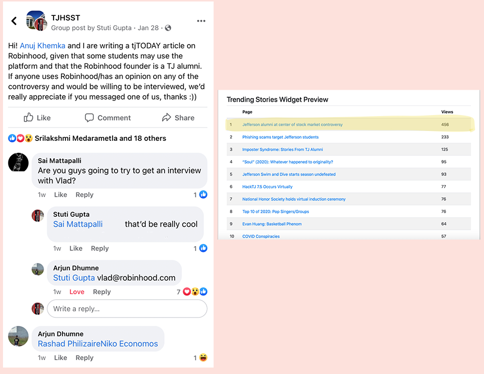

Web Analytics
Awards
- 2021: Columbia Scholastic Press Association Awards Finalist (Gold or Silver, to be announced in March)
- 2020: Columbia Scholastic Press Association Awards Gold Crown Winner
- 2020: National Scholastic Press Association (NSPA) NSPA Pacemaker Winner
Views
My stories typically receive 100 to 150 views. The following is the number of views I have received for my most viewed articles.
- Jefferson alumni at center of stock market controversy (565 views)
- ProjectYCRO: aim to impact (322 views)
- Return to school survey results released (263 views)
- Get your head in the game (205 views)
- Maze hacks Fairfax County Public Schools (204 views)
- Two words better taken out (203 views)
Increasing Viewership
Though our online publication does not require funding, as it is already funded by the school, I strive to increase our online publication viewership by creating buzz around our articles. For example, in January I co-wrote "Jefferson alumni at center of stock market controversy”, an article covering Jefferson alumni and Robinhood founder Vladmir Tenev amidst the stock market frenzy. By posting on Facebook to find interviewees, I not only received responses to my request for interviewees, but also generated excitement for the article. In only 2 days, the article received 456 views and reached number 1 on our tjTODAY trending stories widget. The story eventually reached 565 views.
